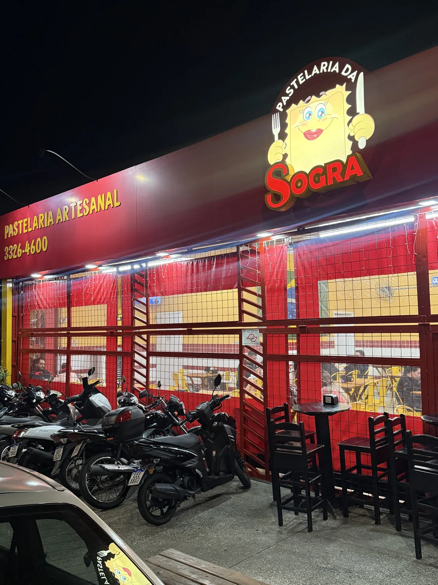

Por telefone
Dúvidas sobre atendimento e informações da unidade.
(15) 3326-4600Quer visitar a pastelaria, tirar uma dúvida ou escolher o próximo pastel? Reunimos aqui os canais de contato, o endereço e as informações para você nos encontrar.

Escolha a forma mais conveniente de falar com a casa ou acompanhar as novidades.
Dúvidas sobre atendimento e informações da unidade.
(15) 3326-4600Fotos, novidades e publicações da pastelaria.
@pastelariadasograPara consultar opções e realizar um pedido, utilize o canal oficial.
Acessar iFoodEncontre a unidade, confira os horários e escolha o melhor caminho.
Horários podem variar em feriados e datas especiais.
Explore os sabores do nosso cardápio ou acesse o iFood para fazer seu pedido.